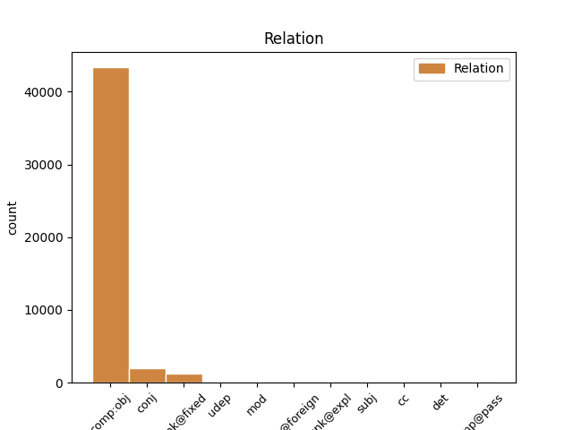
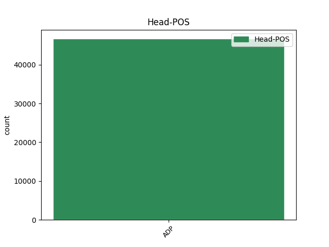
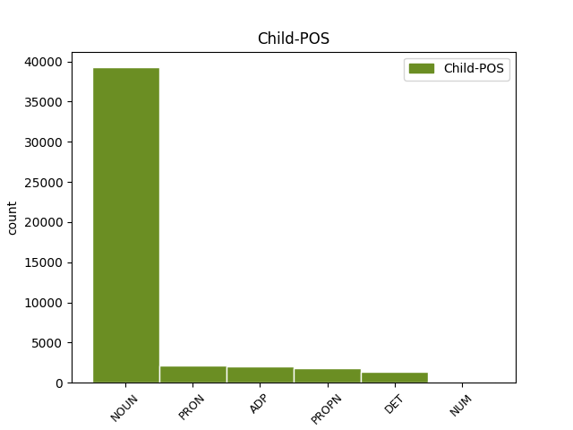

Distribution of features within this leaf



Agreement Rules sorted by frequency.
When the head token is ADP and the dependent token is NOUN.
1 Naproti _ _ _ _ 0 _ _ _
2 tomu _ _ _ _ 0 _ _ _
3 prvky _ _ _ _ 0 _ _ _
4 , _ _ _ _ 0 _ _ _
5 kterým _ _ _ _ 0 _ _ _
6 chybí _ _ _ _ 0 _ _ _
7 jeden _ _ _ _ 0 _ _ _
8 obvodový _ _ _ _ 0 _ _ _
9 elektron _ _ _ _ 0 _ _ _
10 do do ADP RR--2---------- AdpType=Prep|Case=Gen 0 _ _ _
11 úplného _ _ _ _ 0 _ _ _
12 obsazení obsazení NOUN NNNS2-----A---- Case=Gen|Gender=Neut|Number=Sing|Polarity=Pos 10 comp:obj _ LDeriv=obsadit
13 krajní _ _ _ _ 0 _ _ _
14 slupky _ _ _ _ 0 _ _ _
15 a _ _ _ _ 0 _ _ _
16 tvoří _ _ _ _ 0 _ _ _
17 jednomocné _ _ _ _ 0 _ _ _
18 záporné _ _ _ _ 0 _ _ _
19 ionty _ _ _ _ 0 _ _ _
20 a _ _ _ _ 0 _ _ _
21 vznikající _ _ _ _ 0 _ _ _
22 připoutáním _ _ _ _ 0 _ _ _
23 dalšího _ _ _ _ 0 _ _ _
24 elektronu _ _ _ _ 0 _ _ _
25 . _ _ _ _ 0 _ _ _
When the head token is ADP and the dependent token is PRON.
1 Všechny _ _ _ _ 0 _ _ _
2 periody _ _ _ _ 0 _ _ _
3 končí _ _ _ _ 0 _ _ _
4 nultým _ _ _ _ 0 _ _ _
5 sloupcem _ _ _ _ 0 _ _ _
6 , _ _ _ _ 0 _ _ _
7 v v ADP RR--6---------- AdpType=Prep|Case=Loc 0 _ _ _
8 němž jenž PRON P9ZS6---------- Case=Loc|Gender=Masc,Neut|Number=Sing|PrepCase=Pre|PronType=Rel 7 comp:obj _ LGloss=(který_[ve_vedl.větě])
9 jsou _ _ _ _ 0 _ _ _
10 prvky _ _ _ _ 0 _ _ _
11 s _ _ _ _ 0 _ _ _
12 nulovou _ _ _ _ 0 _ _ _
13 valencí _ _ _ _ 0 _ _ _
14 , _ _ _ _ 0 _ _ _
15 které _ _ _ _ 0 _ _ _
16 netvoří _ _ _ _ 0 _ _ _
17 sloučeniny _ _ _ _ 0 _ _ _
18 . _ _ _ _ 0 _ _ _
When the head token is ADP and the dependent token is PROPN.
1 Jemnou _ _ _ _ 0 _ _ _
2 strukturu _ _ _ _ 0 _ _ _
3 spektrálních _ _ _ _ 0 _ _ _
4 čar _ _ _ _ 0 _ _ _
5 se _ _ _ _ 0 _ _ _
6 pokusil _ _ _ _ 0 _ _ _
7 vysvětlit _ _ _ _ 0 _ _ _
8 německý _ _ _ _ 0 _ _ _
9 fyzik _ _ _ _ 0 _ _ _
10 Sommerfels _ _ _ _ 0 _ _ _
11 předpokladem _ _ _ _ 0 _ _ _
12 , _ _ _ _ 0 _ _ _
13 že _ _ _ _ 0 _ _ _
14 elektrony _ _ _ _ 0 _ _ _
15 mohou _ _ _ _ 0 _ _ _
16 obíhat _ _ _ _ 0 _ _ _
17 kolem _ _ _ _ 0 _ _ _
18 jádra _ _ _ _ 0 _ _ _
19 v _ _ _ _ 0 _ _ _
20 eliptických _ _ _ _ 0 _ _ _
21 drahách _ _ _ _ 0 _ _ _
22 podobně _ _ _ _ 0 _ _ _
23 jako _ _ _ _ 0 _ _ _
24 planety _ _ _ _ 0 _ _ _
25 kolem kolem ADP RR--2---------- AdpType=Prep|Case=Gen 0 _ _ _
26 Slunce Slunce PROPN NNNS2-----A---- Case=Gen|Gender=Neut|NameType=Geo|Number=Sing|Polarity=Pos 25 comp:obj _ SpaceAfter=No
27 . _ _ _ _ 0 _ _ _
When the head token is ADP and the dependent token is ADP.
1 Složka _ _ _ _ 0 _ _ _
2 magnetického _ _ _ _ 0 _ _ _
3 momentu _ _ _ _ 0 _ _ _
4 ve v ADP RV--6---------- AdpType=Voc|Case=Loc 0 _ _ _
5 směru _ _ _ _ 0 _ _ _
6 osy _ _ _ _ 0 _ _ _
7 atomu _ _ _ _ 0 _ _ _
8 nebo _ _ _ _ 0 _ _ _
9 ve v ADP RV--6---------- AdpType=Voc|Case=Loc 4 conj _ LId=v-1
10 směru _ _ _ _ 0 _ _ _
11 magnetického _ _ _ _ 0 _ _ _
12 pole _ _ _ _ 0 _ _ _
13 , _ _ _ _ 0 _ _ _
14 v _ _ _ _ 0 _ _ _
15 němž _ _ _ _ 0 _ _ _
16 je _ _ _ _ 0 _ _ _
17 zářící _ _ _ _ 0 _ _ _
18 hmota _ _ _ _ 0 _ _ _
19 umístěna _ _ _ _ 0 _ _ _
20 , _ _ _ _ 0 _ _ _
21 nemůže _ _ _ _ 0 _ _ _
22 mít _ _ _ _ 0 _ _ _
23 libovolné _ _ _ _ 0 _ _ _
24 hodnoty _ _ _ _ 0 _ _ _
25 , _ _ _ _ 0 _ _ _
26 neboť _ _ _ _ 0 _ _ _
27 je _ _ _ _ 0 _ _ _
28 také _ _ _ _ 0 _ _ _
29 kvantována _ _ _ _ 0 _ _ _
30 . _ _ _ _ 0 _ _ _
When the head token is ADP and the dependent token is DET.
1 Naproti naproti ADP RR--3---------- AdpType=Prep|Case=Dat 0 _ _ _
2 tomu ten DET PDZS3---------- Case=Dat|Gender=Masc,Neut|Number=Sing|PronType=Dem 1 comp:obj _ _
3 prvky _ _ _ _ 0 _ _ _
4 , _ _ _ _ 0 _ _ _
5 kterým _ _ _ _ 0 _ _ _
6 chybí _ _ _ _ 0 _ _ _
7 jeden _ _ _ _ 0 _ _ _
8 obvodový _ _ _ _ 0 _ _ _
9 elektron _ _ _ _ 0 _ _ _
10 do _ _ _ _ 0 _ _ _
11 úplného _ _ _ _ 0 _ _ _
12 obsazení _ _ _ _ 0 _ _ _
13 krajní _ _ _ _ 0 _ _ _
14 slupky _ _ _ _ 0 _ _ _
15 a _ _ _ _ 0 _ _ _
16 tvoří _ _ _ _ 0 _ _ _
17 jednomocné _ _ _ _ 0 _ _ _
18 záporné _ _ _ _ 0 _ _ _
19 ionty _ _ _ _ 0 _ _ _
20 a _ _ _ _ 0 _ _ _
21 vznikající _ _ _ _ 0 _ _ _
22 připoutáním _ _ _ _ 0 _ _ _
23 dalšího _ _ _ _ 0 _ _ _
24 elektronu _ _ _ _ 0 _ _ _
25 . _ _ _ _ 0 _ _ _
When the head token is ADP and the dependent token is NUM.
1 Eliptická _ _ _ _ 0 _ _ _
2 dráha _ _ _ _ 0 _ _ _
3 má _ _ _ _ 0 _ _ _
4 poloosy _ _ _ _ 0 _ _ _
5 , _ _ _ _ 0 _ _ _
6 kde _ _ _ _ 0 _ _ _
7 je _ _ _ _ 0 _ _ _
8 Bohrův _ _ _ _ 0 _ _ _
9 poloměr _ _ _ _ 0 _ _ _
10 , _ _ _ _ 0 _ _ _
11 poloměr _ _ _ _ 0 _ _ _
12 jednokvantové _ _ _ _ 0 _ _ _
13 dráhy _ _ _ _ 0 _ _ _
14 pro _ _ _ _ 0 _ _ _
15 vodík _ _ _ _ 0 _ _ _
16 , _ _ _ _ 0 _ _ _
17 číselně _ _ _ _ 0 _ _ _
18 je _ _ _ _ 0 _ _ _
19 hlavní _ _ _ _ 0 _ _ _
20 kvantové _ _ _ _ 0 _ _ _
21 číslo _ _ _ _ 0 _ _ _
22 , _ _ _ _ 0 _ _ _
23 celé _ _ _ _ 0 _ _ _
24 číslo _ _ _ _ 0 _ _ _
25 , _ _ _ _ 0 _ _ _
26 které _ _ _ _ 0 _ _ _
27 se _ _ _ _ 0 _ _ _
28 u _ _ _ _ 0 _ _ _
29 prvků _ _ _ _ 0 _ _ _
30 mění _ _ _ _ 0 _ _ _
31 od _ _ _ _ 0 _ _ _
32 jedné _ _ _ _ 0 _ _ _
33 do _ _ _ _ 0 _ _ _
34 sedmi _ _ _ _ 0 _ _ _
35 , _ _ _ _ 0 _ _ _
36 je _ _ _ _ 0 _ _ _
37 vedlejší _ _ _ _ 0 _ _ _
38 kvantové _ _ _ _ 0 _ _ _
39 číslo _ _ _ _ 0 _ _ _
40 Heisenbergovo _ _ _ _ 0 _ _ _
41 , _ _ _ _ 0 _ _ _
42 které _ _ _ _ 0 _ _ _
43 se _ _ _ _ 0 _ _ _
44 mění _ _ _ _ 0 _ _ _
45 od _ _ _ _ 0 _ _ _
46 nuly _ _ _ _ 0 _ _ _
47 do do ADP RR--2---------- AdpType=Prep|Case=Gen 0 _ _ _
48 tří tři NUM ClXP2---------- Case=Gen|Number=Plur|NumForm=Word|NumType=Card|NumValue=1,2,3 47 comp:obj _ LNumValue=3|SpaceAfter=No
49 . _ _ _ _ 0 _ _ _
Disagree Examples:
1 I _ _ _ _ 0 _ _ _
2 zde _ _ _ _ 0 _ _ _
3 je _ _ _ _ 0 _ _ _
4 třeba _ _ _ _ 0 _ _ _
5 zdůraznit _ _ _ _ 0 _ _ _
6 povinnost _ _ _ _ 0 _ _ _
7 chovat _ _ _ _ 0 _ _ _
8 se _ _ _ _ 0 _ _ _
9 v _ _ _ _ 0 _ _ _
10 silničním _ _ _ _ 0 _ _ _
11 provozu _ _ _ _ 0 _ _ _
12 opatrně _ _ _ _ 0 _ _ _
13 , _ _ _ _ 0 _ _ _
14 a _ _ _ _ 0 _ _ _
15 to _ _ _ _ 0 _ _ _
16 se s ADP RV--7---------- AdpType=Voc|Case=Ins 0 _ _ _
17 zřetelem _ _ _ _ 0 _ _ _
18 * _ _ _ _ 0 _ _ _
19 tomu ten DET PDZS3---------- Case=Dat|Gender=Masc,Neut|Number=Sing|PronType=Dem 16 comp:obj _ SpaceAfter=No
20 , _ _ _ _ 0 _ _ _
21 že _ _ _ _ 0 _ _ _
22 * _ _ _ _ 0 _ _ _
23 nehod _ _ _ _ 0 _ _ _
24 zaviněných _ _ _ _ 0 _ _ _
25 z _ _ _ _ 0 _ _ _
26 nedodržení _ _ _ _ 0 _ _ _
27 bezpečné _ _ _ _ 0 _ _ _
28 vzdálenosti _ _ _ _ 0 _ _ _
29 za _ _ _ _ 0 _ _ _
30 vpředu _ _ _ _ 0 _ _ _
31 jedoucím _ _ _ _ 0 _ _ _
32 vozidlem _ _ _ _ 0 _ _ _
33 rok _ _ _ _ 0 _ _ _
34 od _ _ _ _ 0 _ _ _
35 roku _ _ _ _ 0 _ _ _
36 stoupá _ _ _ _ 0 _ _ _
37 . _ _ _ _ 0 _ _ _
1 V v ADP RR--6---------- AdpType=Prep|Case=Loc 0 _ _ _
2 zájmu _ _ _ _ 0 _ _ _
3 ochrany ochrana NOUN NNFS2-----A---- Case=Gen|Gender=Fem|Number=Sing|Polarity=Pos 1 comp:obj _ _
4 životního _ _ _ _ 0 _ _ _
5 prostředí _ _ _ _ 0 _ _ _
6 se _ _ _ _ 0 _ _ _
7 přesněji _ _ _ _ 0 _ _ _
8 vymezuje _ _ _ _ 0 _ _ _
9 zákaz _ _ _ _ 0 _ _ _
10 obtěžování _ _ _ _ 0 _ _ _
11 nadměrným _ _ _ _ 0 _ _ _
12 hlukem _ _ _ _ 0 _ _ _
13 a _ _ _ _ 0 _ _ _
14 znečišťování _ _ _ _ 0 _ _ _
15 ovzduší _ _ _ _ 0 _ _ _
16 . _ _ _ _ 0 _ _ _
1 Řidič _ _ _ _ 0 _ _ _
2 nesmí _ _ _ _ 0 _ _ _
3 řídit _ _ _ _ 0 _ _ _
4 vozidlo _ _ _ _ 0 _ _ _
5 , _ _ _ _ 0 _ _ _
6 je _ _ _ _ 0 _ _ _
7 - _ _ _ _ 0 _ _ _
8 li _ _ _ _ 0 _ _ _
9 jeho _ _ _ _ 0 _ _ _
10 schopnost _ _ _ _ 0 _ _ _
11 k _ _ _ _ 0 _ _ _
12 řízení _ _ _ _ 0 _ _ _
13 snížena _ _ _ _ 0 _ _ _
14 požitím _ _ _ _ 0 _ _ _
15 alkoholického _ _ _ _ 0 _ _ _
16 nápoje _ _ _ _ 0 _ _ _
17 před před ADP RR--7---------- AdpType=Prep|Case=Ins 0 _ _ _
18 jízdou _ _ _ _ 0 _ _ _
19 nebo _ _ _ _ 0 _ _ _
20 během během ADP RR--2---------- AdpType=Prep|Case=Gen 17 conj _ _
21 jízdy _ _ _ _ 0 _ _ _
22 . _ _ _ _ 0 _ _ _
1 Dosavadní _ _ _ _ 0 _ _ _
2 ustanovení _ _ _ _ 0 _ _ _
3 * _ _ _ _ 0 _ _ _
4 a _ _ _ _ 0 _ _ _
5 * _ _ _ _ 0 _ _ _
6 vyhlášky _ _ _ _ 0 _ _ _
7 bylo _ _ _ _ 0 _ _ _
8 spojeno _ _ _ _ 0 _ _ _
9 v _ _ _ _ 0 _ _ _
10 jedno _ _ _ _ 0 _ _ _
11 ustanovení _ _ _ _ 0 _ _ _
12 Směr _ _ _ _ 0 _ _ _
13 jízdy _ _ _ _ 0 _ _ _
14 a _ _ _ _ 0 _ _ _
15 jízda _ _ _ _ 0 _ _ _
16 v _ _ _ _ 0 _ _ _
17 jízdních _ _ _ _ 0 _ _ _
18 pruzích _ _ _ _ 0 _ _ _
19 , _ _ _ _ 0 _ _ _
20 které _ _ _ _ 0 _ _ _
21 bylo _ _ _ _ 0 _ _ _
22 nově _ _ _ _ 0 _ _ _
23 zpracováno _ _ _ _ 0 _ _ _
24 se s ADP RV--7---------- AdpType=Voc|Case=Ins 0 _ _ _
25 zřetelem _ _ _ _ 0 _ _ _
26 na _ _ _ _ 0 _ _ _
27 dosavadní _ _ _ _ 0 _ _ _
28 zkušenosti zkušenost NOUN NNFP4-----A---- Case=Acc|Gender=Fem|Number=Plur|Polarity=Pos 24 comp:obj _ _
29 z _ _ _ _ 0 _ _ _
30 provozu _ _ _ _ 0 _ _ _
31 na _ _ _ _ 0 _ _ _
32 dálnici _ _ _ _ 0 _ _ _
33 a _ _ _ _ 0 _ _ _
34 městských _ _ _ _ 0 _ _ _
35 vícepruhových _ _ _ _ 0 _ _ _
36 komunikacích _ _ _ _ 0 _ _ _
37 . _ _ _ _ 0 _ _ _
1 Toto _ _ _ _ 0 _ _ _
2 ustanovení _ _ _ _ 0 _ _ _
3 upravuje _ _ _ _ 0 _ _ _
4 jízdu _ _ _ _ 0 _ _ _
5 na _ _ _ _ 0 _ _ _
6 silnicích _ _ _ _ 0 _ _ _
7 s _ _ _ _ 0 _ _ _
8 vozovkou _ _ _ _ 0 _ _ _
9 o _ _ _ _ 0 _ _ _
10 dvou _ _ _ _ 0 _ _ _
11 nebo _ _ _ _ 0 _ _ _
12 více _ _ _ _ 0 _ _ _
13 jízdních _ _ _ _ 0 _ _ _
14 pruzích _ _ _ _ 0 _ _ _
15 v _ _ _ _ 0 _ _ _
16 jednom _ _ _ _ 0 _ _ _
17 směru _ _ _ _ 0 _ _ _
18 jízdy _ _ _ _ 0 _ _ _
19 mimo _ _ _ _ 0 _ _ _
20 obec _ _ _ _ 0 _ _ _
21 bez bez ADP RR--2---------- AdpType=Prep|Case=Gen 0 _ _ _
22 ohledu _ _ _ _ 0 _ _ _
23 na _ _ _ _ 0 _ _ _
24 to ten DET PDNS4---------- Case=Acc|Gender=Neut|Number=Sing|PronType=Dem 21 comp:obj _ SpaceAfter=No
25 , _ _ _ _ 0 _ _ _
26 zda _ _ _ _ 0 _ _ _
27 jsou _ _ _ _ 0 _ _ _
28 jízdní _ _ _ _ 0 _ _ _
29 pruhy _ _ _ _ 0 _ _ _
30 na _ _ _ _ 0 _ _ _
31 vozovce _ _ _ _ 0 _ _ _
32 vyznačeny _ _ _ _ 0 _ _ _
33 či _ _ _ _ 0 _ _ _
34 nevyznačeny _ _ _ _ 0 _ _ _
35 , _ _ _ _ 0 _ _ _
36 a _ _ _ _ 0 _ _ _
37 v _ _ _ _ 0 _ _ _
38 obci _ _ _ _ 0 _ _ _
39 v _ _ _ _ 0 _ _ _
40 těch _ _ _ _ 0 _ _ _
41 případech _ _ _ _ 0 _ _ _
42 , _ _ _ _ 0 _ _ _
43 kdy _ _ _ _ 0 _ _ _
44 jízdní _ _ _ _ 0 _ _ _
45 pruhy _ _ _ _ 0 _ _ _
46 na _ _ _ _ 0 _ _ _
47 vozovce _ _ _ _ 0 _ _ _
48 vyznačeny _ _ _ _ 0 _ _ _
49 nejsou _ _ _ _ 0 _ _ _
50 . _ _ _ _ 0 _ _ _